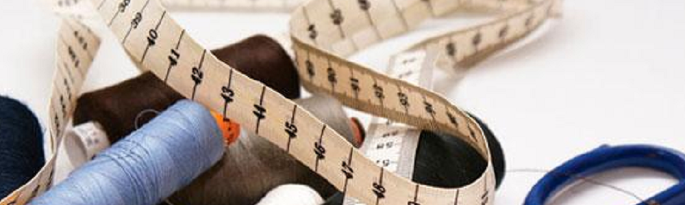

Serving Baldwinsville and Liverpool with your sewing needs.

Life's too short for a bad fit.
I can help with all sorts of alterations, household sewing and mending.
From sewing buttons and recovering cushions to modifying formal wear, I've done it all.
I also do work on dance costumes.
The Stacy Kate Project